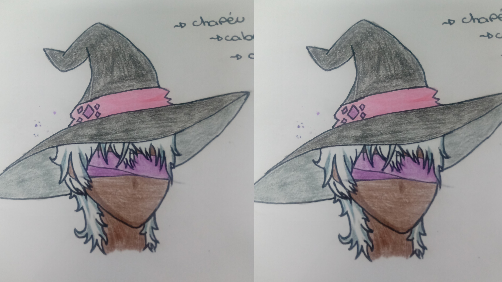
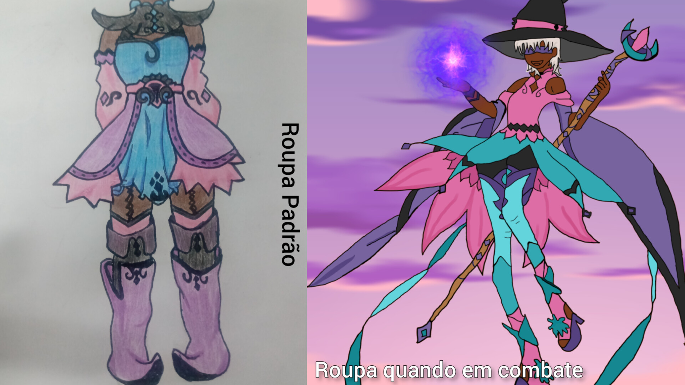
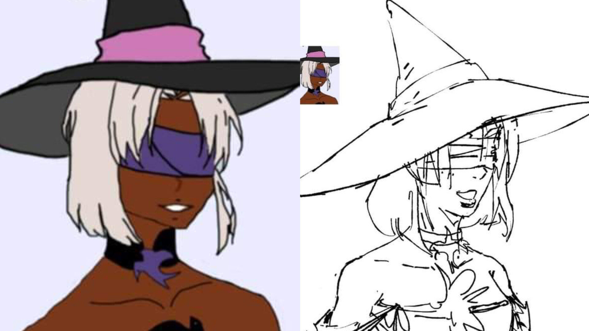
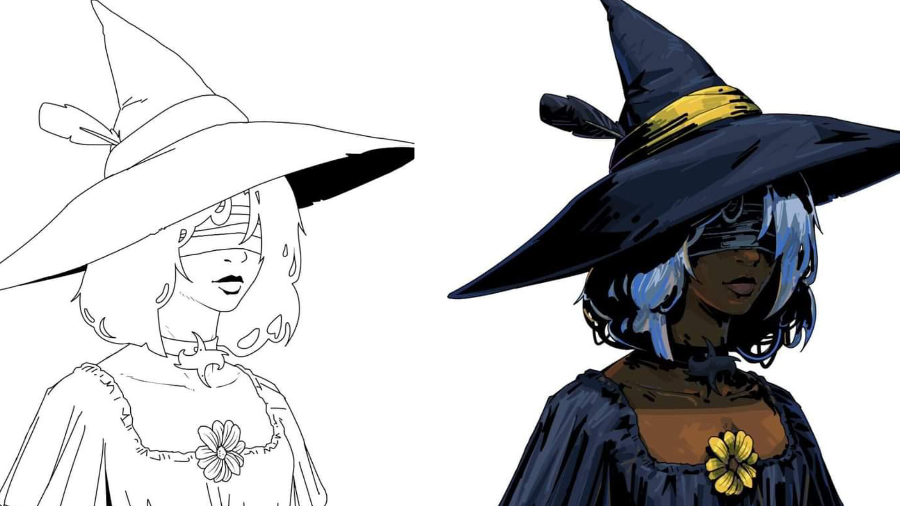
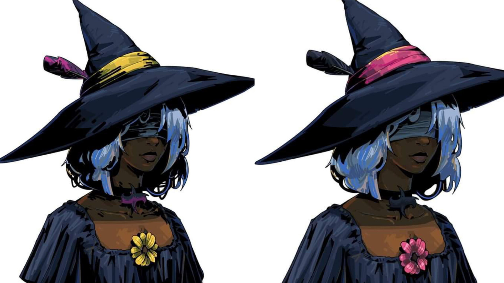
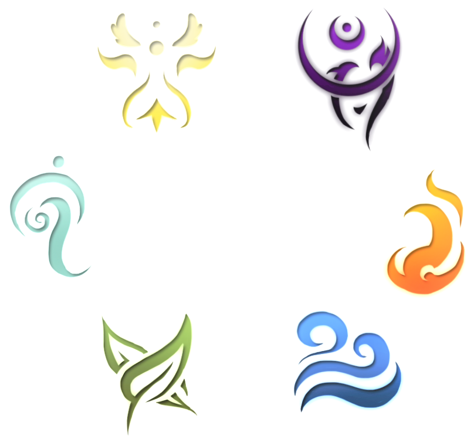
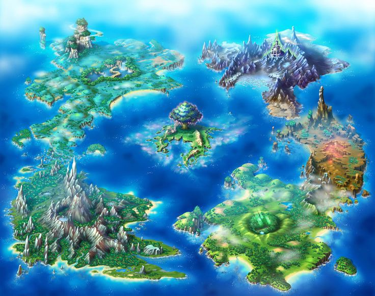

 INICIO Primeiro Esboço O primeiro esboço no papel da nossa ideia inicial, como imaginavamos ela, como queriamos ela. Com seus traços e detalhes unicos e paleta de cores significativas para nossa ideia principal, mantendo o roxo, rosa e azul que seria adicionado em sua roupa eventualmente. Com um chapéu grande e uma faixa em seu olho.
 Visual Roupas elaboradas Pensado na proposta de fazer um personagem que conquiste o público infanto-juvenil as roupas foram pensadas em cada detalhe para que a personagem trasmita uma aura mais leve e alegre. Os tons de roxo, rosa e azul foram baseados nas cores da bandeira bissexual, que foi a sexualidade escolhida para a personagem.
 DESENVOLVIMENTO Desenho Através do esboço criado inicialmente, foi passado para um profissional como deveria ser feito o desenho da nossa maga e então elaborado outro esboço que iniciaria a arte principal.
 DESENVOLVIMENTO Desenho Depois da aprovação dos desenvolvedores, se iniciou o desenho, dias de trabalho e olhando os detalhes, foi pensado em tudo para que ficasse do jeito que desejavamos, só que melhor.
 DESENVOLVIMENTO FINAL Tudo pronto, ultimo esboço foi criado e escolhemos as cores finais onde deveria ficar, pensando num estilo melhor, uma paleta que combinasse com tudo. O personagem foi criado durante muitos dias para uma entrega 100% do que queriamos mostrar para todos, desde sua historia, até a parte visual, um trabalho executado com perfeição, uma personagem cativante que você não se arrependerá de conhecer em nosso universo.
 ELEMENTOS ELEMENTOS Existem seis elementos na natureza: água, ar, fogo, terra, trevas e luz, onde podem se especializar em um ou mais para ficar mais forte. SOBRE ELEMENTO DA YUJU: FOGO Apenas Magos corajosos aceitam se especializar no mais perigoso e destrutivo dos Caminhos. A chama que aquece e traz conforto pode facilmente fugir ao controle e reduzir tudo a cinzas. Magos do Fogo são temidos, mesmo como aliados. O Mago do Fogo busca aprender magias ofensivas ligadas a seu elemento: Bola de Fogo, Explosão, Flecha de Fogo. O Caminho do Fogo também possui algumas magias ligadas a emoções fortes, ao controlar a chama do coração. Como não pode controla muito bem o caminho da Água, este Mago não tem acesso a magias de cura ou Transformação.
 BOSQUE DO INFINITO UM LUGAR MISTERIOSO O bosque do Infinito é um lugar misterioso e com diversos lugares para serem explorados, lugares que nenhum humano normal ousaria ir. Ao amanhecer, é um lugar lindo, encantador e com arvores coloridas, animais inofensivos e ofensivos, cores vibrantes que fazem brilhar os olhos daqueles que passam por ali, magico. Ao anoitecer, não parece tão encantador assim, é um lugar assustador, escuro, repleto de monstros perigosos que irão pra cima com tudo sem ao menos hesitar. Qualquer um poderia facilmente se perder neste boque, é um ambiente enorme, com biomas diferentes, desconhecidos.